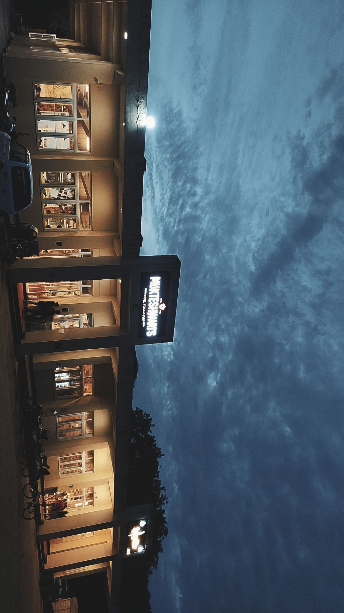
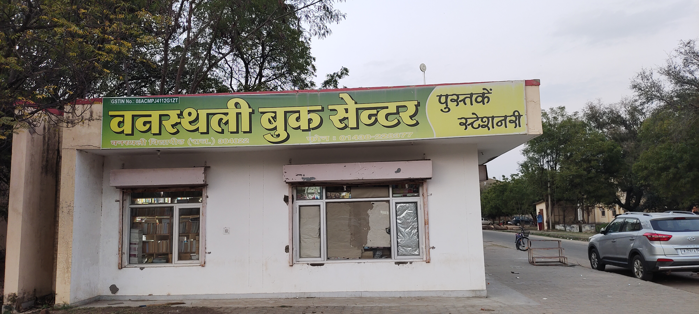
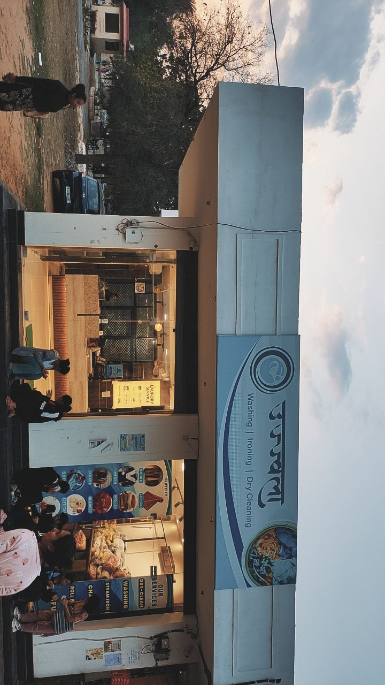
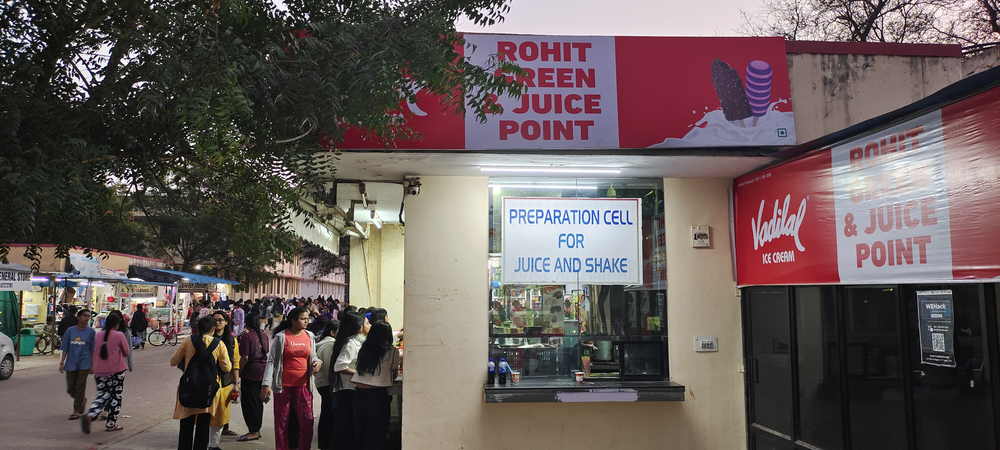
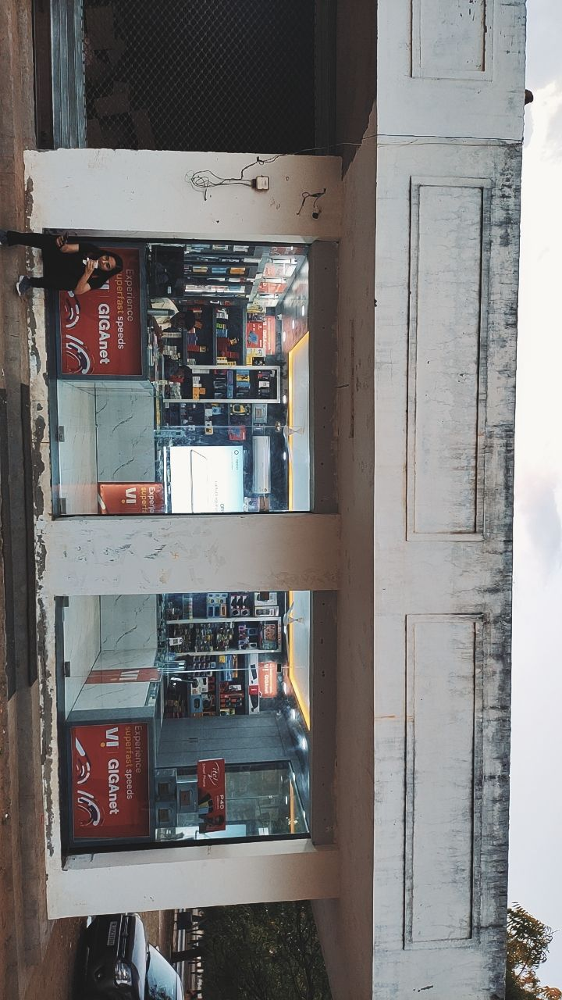
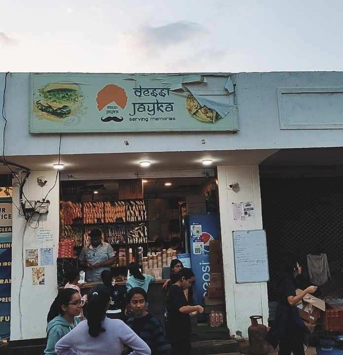
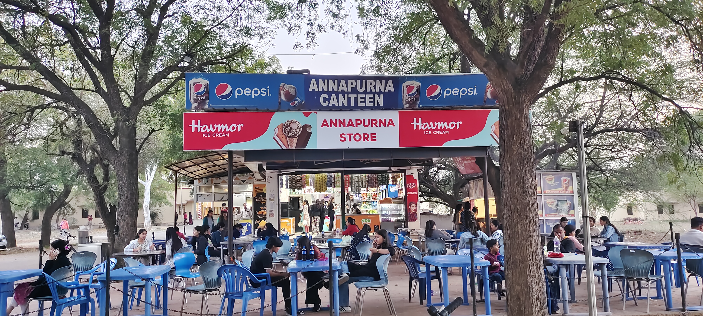
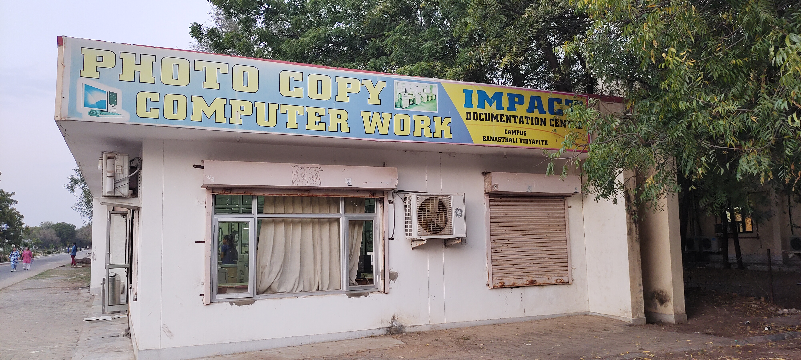
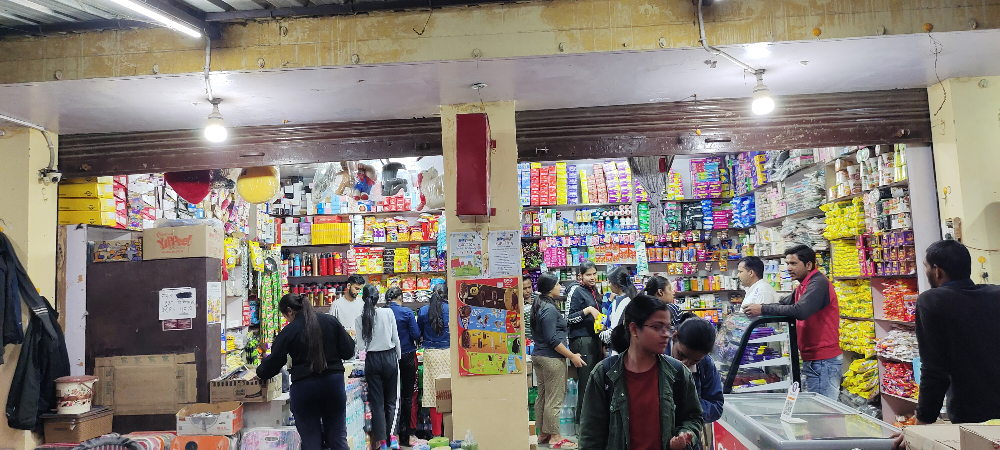

The most popular restaurant cum cafe offers a cozy and inviting ambience with comfortable seating arrangements, soothing music and it provides the flexibility to enjoy a variety of dining options throughout the day, making it a versatile choice for casual meals, gatherings, or simply relaxing with a cup of coffee or a meal.
MukteshwariIn addition to selling books of different genres and categories, these stores provide a wide range of stationery products such as notebooks, pens, pencils, markers, erasers, rulers, folders, sticky notes, and other writing and organizational supplies.
BanasthaliThe laundry shop where customers can have their clothes and other textiles cleaned and sometimes dried. It provides a range of services, including washing, drying, and folding clothes, as well as dry cleaning for garments that require special care.
UjwalaA small food restaurant typically embodies a cozy and intimate atmosphere. It exudes the aroma of freshly cooked dishes, inviting passersby with tantalizing scents. It features a modest setup, perhaps adorned with colorful signage or a simple awning overhead. Customers gather around, engaging in lively conversations as they savor flavorful bites crafted with care by the passionate proprietor.
DesiThis shop offer a variety of locally sourced or imported produce, including leafy greens, root vegetables, seasonal fruits, herbs, and sometimes organic options. This shop typically aims to provide students and staff with high-quality and fresh products, including fresh and tender coconut water.
DigitalA small food restaurant typically embodies a cozy and intimate atmosphere. It exudes the aroma of freshly cooked dishes, inviting passersby with tantalizing scents. It features a modest setup, perhaps adorned with colorful signage or a simple awning overhead. Customers gather around, engaging in lively conversations as they savor flavorful bites crafted with care by the passionate proprietor.
DesiThe restaurant embodies a tapestry of flavors and experiences, inviting patrons into a realm of culinary delight and conviviality.
AnnapurnaIt is a general store that serves as a cornerstone of community life, offering a wide array of everyday essentials and specialty goods to locals and travelers alike.
PhotocopyIt is a general store that serves as a cornerstone of community life, offering a wide array of everyday essentials and specialty goods to locals and travelers alike.
Ganpati